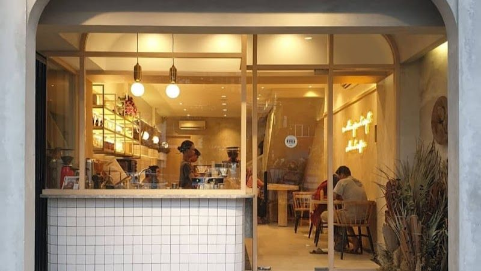
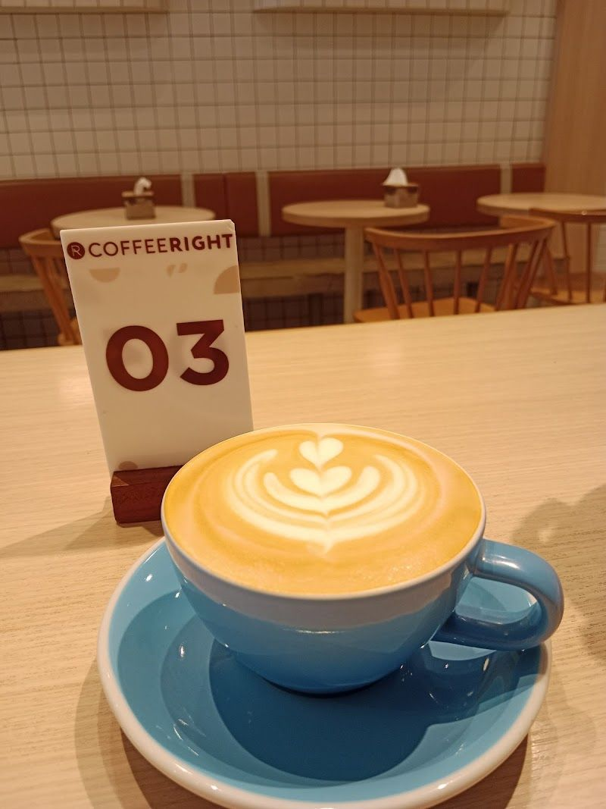

Our Services
Discover our range of services designed to bring a touch of elegance and warmth to your events.

Portable Coffee Bar
Our portable coffee bar brings the café experience to your venue, offering a range of coffee options tailored to your guests' preferences.

Events
From weddings to corporate functions, we provide a bespoke coffee service that complements the theme and atmosphere of your event.